原文连接:https://www.cnblogs.com/aishangJava/p/11922550.html
一、Java 基础
1. JDK 和 JRE 有什么区别？
- JDK：Java Development Kit 的简称，java 开发工具包，提供了 java 的开发环境和运行环境。
- JRE：Java Runtime Environment 的简称，java 运行环境，为 java 的运行提供了所需环境。
具体来说 JDK 其实包含了 JRE，同时还包含了编译 java 源码的编译器 javac，还包含了很多 java 程序调试和分析的工具。简单来说：如果你需要运行 java 程序，只需安装 JRE 就可以了，如果你需要编写 java 程序，需要安装 JDK。
2. == 和 equals 的区别是什么？
== 解读
对于基本类型和引用类型 == 的作用效果是不同的，如下所示：
- 基本类型：比较的是值是否相同；
- 引用类型：比较的是引用是否相同；
代码示例：
1 String x = "string";
2 String y = "string";
3 String z = new String("string");
4 System.out.println(x==y); // true
5 System.out.println(x==z); // false
6 System.out.println(x.equals(y)); // true
7 System.out.println(x.equals(z)); // true代码解读：因为 x 和 y 指向的是同一个引用，所以 == 也是 true，而 new String()方法则重写开辟了内存空间，所以 == 结果为 false，而 equals 比较的一直是值，所以结果都为 true。
equals 解读
equals 本质上就是 ==，只不过 String 和 Integer 等重写了 equals 方法，把它变成了值比较。看下面的代码就明白了。
首先来看默认情况下 equals 比较一个有相同值的对象，代码如下：
1 class Cat {
2 public Cat(String name) {
3 this.name = name;
4 }
5
6 private String name;
7
8 public String getName() {
9 return name;
10 }
11
12 public void setName(String name) {
13 this.name = name;
14 }
15 }
16
17 Cat c1 = new Cat("王磊");
18 Cat c2 = new Cat("王磊");
19 System.out.println(c1.equals(c2)); // false输出结果出乎我们的意料，竟然是 false？这是怎么回事，看了 equals 源码就知道了，源码如下：
1 public boolean equals(Object obj) {
2 return (this == obj);
3 }原来 equals 本质上就是 ==。
那问题来了，两个相同值的 String 对象，为什么返回的是 true？代码如下：
1 String s1 = new String("老王");
2 String s2 = new String("老王");
3 System.out.println(s1.equals(s2)); // true同样的，当我们进入 String 的 equals 方法，找到了答案，代码如下：
1 public boolean equals(Object anObject) {
2 if (this == anObject) {
3 return true;
4 }
5 if (anObject instanceof String) {
6 String anotherString = (String)anObject;
7 int n = value.length;
8 if (n == anotherString.value.length) {
9 char v1[] = value;
10 char v2[] = anotherString.value;
11 int i = 0;
12 while (n-- != 0) {
13 if (v1[i] != v2[i])
14 return false;
15 i++;
16 }
17 return true;
18 }
19 }
20 return false;
21 }原来是 String 重写了 Object 的 equals 方法，把引用比较改成了值比较。
总结 ：== 对于基本类型来说是值比较，对于引用类型来说是比较的是引用；而 equals 默认情况下是引用比较，只是很多类重新了 equals 方法，比如 String、Integer 等把它变成了值比较，所以一般情况下 equals 比较的是值是否相等。
3. 两个对象的 hashCode()相同，则 equals()也一定为 true，对吗？
不对，两个对象的 hashCode()相同，equals()不一定 true。
代码示例：
1 String str1 = "通话";
2 String str2 = "重地";
3 System.out.println(String.format("str1：%d | str2：%d", str1.hashCode(),str2.hashCode()));
4 System.out.println(str1.equals(str2));执行的结果：
str1：1179395 | str2：1179395
false
代码解读：很显然“通话”和“重地”的 hashCode() 相同，然而 equals() 则为 false，因为在散列表中，hashCode()相等即两个键值对的哈希值相等，然而哈希值相等，并不一定能得出键值对相等。
4. final 在 java 中有什么作用？
- final 修饰的类叫最终类，该类不能被继承。
- final 修饰的方法不能被重写。
- final 修饰的变量叫常量，常量必须初始化，初始化之后值就不能被修改。
5. java 中的 Math.round(-1.5) 等于多少？
等于 -1，因为在数轴上取值时，中间值（0.5）向右取整，所以正 0.5 是往上取整，负 0.5 是直接舍弃。
6. String 属于基础的数据类型吗？
String 不属于基础类型，基础类型有 8 种：byte、boolean、char、short、int、float、long、double，而 String 属于对象。
7. java 中操作字符串都有哪些类？它们之间有什么区别？
操作字符串的类有：String、StringBuffer、StringBuilder。
String 和 StringBuffer、StringBuilder 的区别在于 String 声明的是不可变的对象，每次操作都会生成新的 String 对象，然后将指针指向新的 String 对象，而 StringBuffer、StringBuilder 可以在原有对象的基础上进行操作，所以在经常改变字符串内容的情况下最好不要使用 String。
StringBuffer 和 StringBuilder 最大的区别在于，StringBuffer 是线程安全的，而 StringBuilder 是非线程安全的，但 StringBuilder 的性能却高于 StringBuffer，所以在单线程环境下推荐使用 StringBuilder，多线程环境下推荐使用 StringBuffer。
8. String str="i"与 String str=new String("i")一样吗？
不一样，因为内存的分配方式不一样。String str="i"的方式，java 虚拟机会将其分配到常量池中；而 String str=new String("i") 则会被分到堆内存中。
9. 如何将字符串反转？
使用 StringBuilder 或者 stringBuffer 的 reverse() 方法。
示例代码：
1 // StringBuffer reverse
2 StringBuffer stringBuffer = new StringBuffer();
3 stringBuffer.append("abcdefg");
4 System.out.println(stringBuffer.reverse()); // gfedcba
5 // StringBuilder reverse
6 StringBuilder stringBuilder = new StringBuilder();
7 stringBuilder.append("abcdefg");
8 System.out.println(stringBuilder.reverse()); // gfedcba10. String 类的常用方法都有那些？
- indexOf()：返回指定字符的索引。
- charAt()：返回指定索引处的字符。
- replace()：字符串替换。
- trim()：去除字符串两端空白。
- split()：分割字符串，返回一个分割后的字符串数组。
- getBytes()：返回字符串的 byte 类型数组。
- length()：返回字符串长度。
- toLowerCase()：将字符串转成小写字母。
- toUpperCase()：将字符串转成大写字符。
- substring()：截取字符串。
- equals()：字符串比较。
11. 抽象类必须要有抽象方法吗？
不需要，抽象类不一定非要有抽象方法。
示例代码：
1 abstract class Cat {
2 public static void sayHi() {
3 System.out.println("hi~");
4 }
5 }上面代码，抽象类并没有抽象方法但完全可以正常运行。
12. 普通类和抽象类有哪些区别？
- 普通类不能包含抽象方法，抽象类可以包含抽象方法。
- 抽象类不能直接实例化，普通类可以直接实例化。
13. 抽象类能使用 final 修饰吗？
不能，定义抽象类就是让其他类继承的，如果定义为 final 该类就不能被继承，这样彼此就会产生矛盾，所以 final 不能修饰抽象类，如下图所示，编辑器也会提示错误信息：
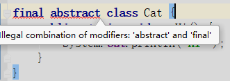
14. 接口和抽象类有什么区别？
- 实现：抽象类的子类使用 extends 来继承；接口必须使用 implements 来实现接口。
- 构造函数：抽象类可以有构造函数；接口不能有。
- main 方法：抽象类可以有 main 方法，并且我们能运行它；接口不能有 main 方法。
- 实现数量：类可以实现很多个接口；但是只能继承一个抽象类。
- 访问修饰符：接口中的方法默认使用 public 修饰；抽象类中的方法可以是任意访问修饰符。
15. java 中 IO 流分为几种？
按功能来分：输入流（input）、输出流（output）。
按类型来分：字节流和字符流。
字节流和字符流的区别是：字节流按 8 位传输以字节为单位输入输出数据，字符流按 16 位传输以字符为单位输入输出数据。
16. BIO、NIO、AIO 有什么区别？
- BIO：Block IO 同步阻塞式 IO，就是我们平常使用的传统 IO，它的特点是模式简单使用方便，并发处理能力低。
- NIO：New IO 同步非阻塞 IO，是传统 IO 的升级，客户端和服务器端通过 Channel（通道）通讯，实现了多路复用。
- AIO：Asynchronous IO 是 NIO 的升级，也叫 NIO2，实现了异步非堵塞 IO ，异步 IO 的操作基于事件和回调机制。
17. Files的常用方法都有哪些？
- Files.exists()：检测文件路径是否存在。
- Files.createFile()：创建文件。
- Files.createDirectory()：创建文件夹。
- Files.delete()：删除一个文件或目录。
- Files.copy()：复制文件。
- Files.move()：移动文件。
- Files.size()：查看文件个数。
- Files.read()：读取文件。
- Files.write()：写入文件。
二、容器
18. java 容器都有哪些？
常用容器的图录：
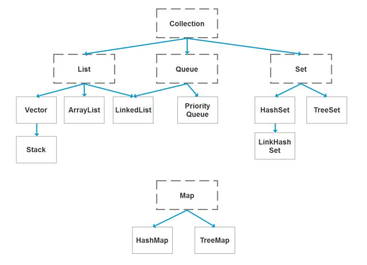
19. Collection 和 Collections 有什么区别？
- java.util.Collection 是一个集合接口（集合类的一个顶级接口）。它提供了对集合对象进行基本操作的通用接口方法。Collection接口在Java 类库中有很多具体的实现。Collection接口的意义是为各种具体的集合提供了最大化的统一操作方式，其直接继承接口有List与Set。
- Collections则是集合类的一个工具类/帮助类，其中提供了一系列静态方法，用于对集合中元素进行排序、搜索以及线程安全等各种操作。
20. List、Set、Map 之间的区别是什么？
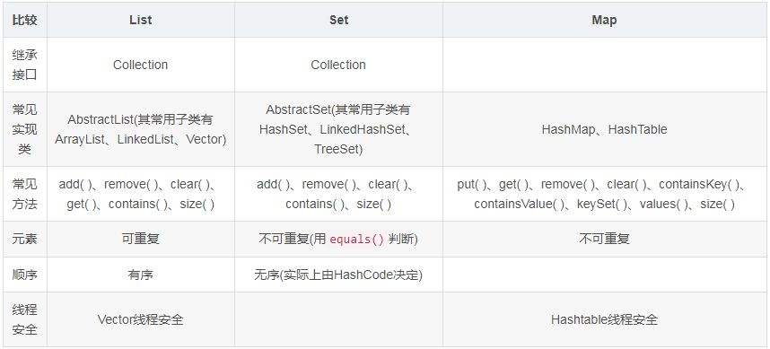
21. HashMap 和 Hashtable 有什么区别？
- hashMap去掉了HashTable 的contains方法，但是加上了containsValue（）和containsKey（）方法。
- hashTable同步的，而HashMap是非同步的，效率上逼hashTable要高。
- hashMap允许空键值，而hashTable不允许。
22. 如何决定使用 HashMap 还是 TreeMap？
对于在Map中插入、删除和定位元素这类操作，HashMap是最好的选择。然而，假如你需要对一个有序的key集合进行遍历，TreeMap是更好的选择。基于你的collection的大小，也许向HashMap中添加元素会更快，将map换为TreeMap进行有序key的遍历。
23. 说一下 HashMap 的实现原理？
HashMap概述： HashMap是基于哈希表的Map接口的非同步实现。此实现提供所有可选的映射操作，并允许使用null值和null键。此类不保证映射的顺序，特别是它不保证该顺序恒久不变。
HashMap的数据结构： 在java编程语言中，最基本的结构就是两种，一个是数组，另外一个是模拟指针（引用），所有的数据结构都可以用这两个基本结构来构造的，HashMap也不例外。HashMap实际上是一个“链表散列”的数据结构，即数组和链表的结合体。
当我们往Hashmap中put元素时,首先根据key的hashcode重新计算hash值,根绝hash值得到这个元素在数组中的位置(下标),如果该数组在该位置上已经存放了其他元素,那么在这个位置上的元素将以链表的形式存放,新加入的放在链头,最先加入的放入链尾.如果数组中该位置没有元素,就直接将该元素放到数组的该位置上。
需要注意Jdk 1.8中对HashMap的实现做了优化,当链表中的节点数据超过八个之后,该链表会转为红黑树来提高查询效率,从原来的O(n)到O(logn)
24. 说一下 HashSet 的实现原理？
- HashSet底层由HashMap实现
- HashSet的值存放于HashMap的key上
- HashMap的value统一为PRESENT
25. ArrayList 和 LinkedList 的区别是什么？
最明显的区别是 ArrrayList底层的数据结构是数组，支持随机访问，而 LinkedList 的底层数据结构是双向循环链表，不支持随机访问。使用下标访问一个元素，ArrayList 的时间复杂度是 O(1)，而 LinkedList 是 O(n)。
26. 如何实现数组和 List 之间的转换？
- List转换成为数组：调用ArrayList的toArray方法。
- 数组转换成为List：调用Arrays的asList方法。
27. ArrayList 和 Vector 的区别是什么？
- Vector是同步的，而ArrayList不是。然而，如果你寻求在迭代的时候对列表进行改变，你应该使用CopyOnWriteArrayList。
- ArrayList比Vector快，它因为有同步，不会过载。
- ArrayList更加通用，因为我们可以使用Collections工具类轻易地获取同步列表和只读列表。
28. Array 和 ArrayList 有何区别？
- Array可以容纳基本类型和对象，而ArrayList只能容纳对象。
- Array是指定大小的，而ArrayList大小是固定的。
- Array没有提供ArrayList那么多功能，比如addAll、removeAll和iterator等。
29. 在 Queue 中 poll()和 remove()有什么区别？
poll() 和 remove() 都是从队列中取出一个元素，但是 poll() 在获取元素失败的时候会返回空，但是 remove() 失败的时候会抛出异常。
30. 哪些集合类是线程安全的？
- vector：就比arraylist多了个同步化机制（线程安全），因为效率较低，现在已经不太建议使用。在web应用中，特别是前台页面，往往效率（页面响应速度）是优先考虑的。
- statck：堆栈类，先进后出。
- hashtable：就比hashmap多了个线程安全。
- enumeration：枚举，相当于迭代器。
31. 迭代器 Iterator 是什么？
迭代器是一种设计模式，它是一个对象，它可以遍历并选择序列中的对象，而开发人员不需要了解该序列的底层结构。迭代器通常被称为“轻量级”对象，因为创建它的代价小。
32. Iterator 怎么使用？有什么特点？
Java中的Iterator功能比较简单，并且只能单向移动：
(1) 使用方法iterator()要求容器返回一个Iterator。第一次调用Iterator的next()方法时，它返回序列的第一个元素。注意：iterator()方法是java.lang.Iterable接口,被Collection继承。
(2) 使用next()获得序列中的下一个元素。
(3) 使用hasNext()检查序列中是否还有元素。
(4) 使用remove()将迭代器新返回的元素删除。
Iterator是Java迭代器最简单的实现，为List设计的ListIterator具有更多的功能，它可以从两个方向遍历List，也可以从List中插入和删除元素。
33. Iterator 和 ListIterator 有什么区别？
- Iterator可用来遍历Set和List集合，但是ListIterator只能用来遍历List。
- Iterator对集合只能是前向遍历，ListIterator既可以前向也可以后向。
- ListIterator实现了Iterator接口，并包含其他的功能，比如：增加元素，替换元素，获取前一个和后一个元素的索引，等等。
三、多线程
35. 并行和并发有什么区别？
- 并行是指两个或者多个事件在同一时刻发生；而并发是指两个或多个事件在同一时间间隔发生。
- 并行是在不同实体上的多个事件，并发是在同一实体上的多个事件。
- 在一台处理器上“同时”处理多个任务，在多台处理器上同时处理多个任务。如hadoop分布式集群。
所以并发编程的目标是充分的利用处理器的每一个核，以达到最高的处理性能。
36. 线程和进程的区别？
简而言之，进程是程序运行和资源分配的基本单位，一个程序至少有一个进程，一个进程至少有一个线程。进程在执行过程中拥有独立的内存单元，而多个线程共享内存资源，减少切换次数，从而效率更高。线程是进程的一个实体，是cpu调度和分派的基本单位，是比程序更小的能独立运行的基本单位。同一进程中的多个线程之间可以并发执行。
37. 守护线程是什么？
守护线程（即daemon thread），是个服务线程，准确地来说就是服务其他的线程。
38. 创建线程有哪几种方式？
①. 继承Thread类创建线程类
- 定义Thread类的子类，并重写该类的run方法，该run方法的方法体就代表了线程要完成的任务。因此把run()方法称为执行体。
- 创建Thread子类的实例，即创建了线程对象。
- 调用线程对象的start()方法来启动该线程。
②. 通过Runnable接口创建线程类
- 定义runnable接口的实现类，并重写该接口的run()方法，该run()方法的方法体同样是该线程的线程执行体。
- 创建 Runnable实现类的实例，并依此实例作为Thread的target来创建Thread对象，该Thread对象才是真正的线程对象。
- 调用线程对象的start()方法来启动该线程。
③. 通过Callable和Future创建线程
- 创建Callable接口的实现类，并实现call()方法，该call()方法将作为线程执行体，并且有返回值。
- 创建Callable实现类的实例，使用FutureTask类来包装Callable对象，该FutureTask对象封装了该Callable对象的call()方法的返回值。
- 使用FutureTask对象作为Thread对象的target创建并启动新线程。
- 调用FutureTask对象的get()方法来获得子线程执行结束后的返回值。
39. 说一下 runnable 和 callable 有什么区别？
有点深的问题了，也看出一个Java程序员学习知识的广度。
- Runnable接口中的run()方法的返回值是void，它做的事情只是纯粹地去执行run()方法中的代码而已；
- Callable接口中的call()方法是有返回值的，是一个泛型，和Future、FutureTask配合可以用来获取异步执行的结果。
40. 线程有哪些状态？
线程通常都有五种状态，创建、就绪、运行、阻塞和死亡。
- 创建状态。在生成线程对象，并没有调用该对象的start方法，这是线程处于创建状态。
- 就绪状态。当调用了线程对象的start方法之后，该线程就进入了就绪状态，但是此时线程调度程序还没有把该线程设置为当前线程，此时处于就绪状态。在线程运行之后，从等待或者睡眠中回来之后，也会处于就绪状态。
- 运行状态。线程调度程序将处于就绪状态的线程设置为当前线程，此时线程就进入了运行状态，开始运行run函数当中的代码。
- 阻塞状态。线程正在运行的时候，被暂停，通常是为了等待某个时间的发生(比如说某项资源就绪)之后再继续运行。sleep,suspend，wait等方法都可以导致线程阻塞。
- 死亡状态。如果一个线程的run方法执行结束或者调用stop方法后，该线程就会死亡。对于已经死亡的线程，无法再使用start方法令其进入就绪
41. sleep() 和 wait() 有什么区别？
sleep()：方法是线程类（Thread）的静态方法，让调用线程进入睡眠状态，让出执行机会给其他线程，等到休眠时间结束后，线程进入就绪状态和其他线程一起竞争cpu的执行时间。因为sleep() 是static静态的方法，他不能改变对象的机锁，当一个synchronized块中调用了sleep() 方法，线程虽然进入休眠，但是对象的机锁没有被释放，其他线程依然无法访问这个对象。
wait()：wait()是Object类的方法，当一个线程执行到wait方法时，它就进入到一个和该对象相关的等待池，同时释放对象的机锁，使得其他线程能够访问，可以通过notify，notifyAll方法来唤醒等待的线程。
42. notify()和 notifyAll()有什么区别？
- 如果线程调用了对象的 wait()方法，那么线程便会处于该对象的等待池中，等待池中的线程不会去竞争该对象的锁。
- 当有线程调用了对象的 notifyAll()方法（唤醒所有 wait 线程）或 notify()方法（只随机唤醒一个 wait 线程），被唤醒的的线程便会进入该对象的锁池中，锁池中的线程会去竞争该对象锁。也就是说，调用了notify后只要一个线程会由等待池进入锁池，而notifyAll会将该对象等待池内的所有线程移动到锁池中，等待锁竞争。
- 优先级高的线程竞争到对象锁的概率大，假若某线程没有竞争到该对象锁，它还会留在锁池中，唯有线程再次调用 wait()方法，它才会重新回到等待池中。而竞争到对象锁的线程则继续往下执行，直到执行完了 synchronized 代码块，它会释放掉该对象锁，这时锁池中的线程会继续竞争该对象锁。
43. 线程的 run()和 start()有什么区别？
每个线程都是通过某个特定Thread对象所对应的方法run()来完成其操作的，方法run()称为线程体。通过调用Thread类的start()方法来启动一个线程。
start()方法来启动一个线程，真正实现了多线程运行。这时无需等待run方法体代码执行完毕，可以直接继续执行下面的代码； 这时此线程是处于就绪状态， 并没有运行。 然后通过此Thread类调用方法run()来完成其运行状态， 这里方法run()称为线程体，它包含了要执行的这个线程的内容， Run方法运行结束， 此线程终止。然后CPU再调度其它线程。
run()方法是在本线程里的，只是线程里的一个函数,而不是多线程的。 如果直接调用run(),其实就相当于是调用了一个普通函数而已，直接待用run()方法必须等待run()方法执行完毕才能执行下面的代码，所以执行路径还是只有一条，根本就没有线程的特征，所以在多线程执行时要使用start()方法而不是run()方法。
44. 创建线程池有哪几种方式？
①. newFixedThreadPool(int nThreads)
创建一个固定长度的线程池，每当提交一个任务就创建一个线程，直到达到线程池的最大数量，这时线程规模将不再变化，当线程发生未预期的错误而结束时，线程池会补充一个新的线程。
②. newCachedThreadPool()
创建一个可缓存的线程池，如果线程池的规模超过了处理需求，将自动回收空闲线程，而当需求增加时，则可以自动添加新线程，线程池的规模不存在任何限制。
③. newSingleThreadExecutor()
这是一个单线程的Executor，它创建单个工作线程来执行任务，如果这个线程异常结束，会创建一个新的来替代它；它的特点是能确保依照任务在队列中的顺序来串行执行。
④. newScheduledThreadPool(int corePoolSize)
创建了一个固定长度的线程池，而且以延迟或定时的方式来执行任务，类似于Timer。
45. 线程池都有哪些状态？
线程池有5种状态：Running、ShutDown、Stop、Tidying、Terminated。
线程池各个状态切换框架图：
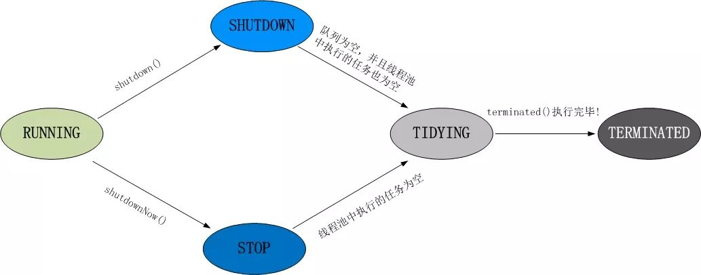
46. 线程池中 submit()和 execute()方法有什么区别？
- 接收的参数不一样
- submit有返回值，而execute没有
- submit方便Exception处理
47. 在 java 程序中怎么保证多线程的运行安全？
线程安全在三个方面体现：
- 原子性：提供互斥访问，同一时刻只能有一个线程对数据进行操作，（atomic,synchronized）；
- 可见性：一个线程对主内存的修改可以及时地被其他线程看到，（synchronized,volatile）；
- 有序性：一个线程观察其他线程中的指令执行顺序，由于指令重排序，该观察结果一般杂乱无序，（happens-before原则）。
48. 多线程锁的升级原理是什么？
在Java中，锁共有4种状态，级别从低到高依次为：无状态锁，偏向锁，轻量级锁和重量级锁状态，这几个状态会随着竞争情况逐渐升级。锁可以升级但不能降级。
锁升级的图示过程：
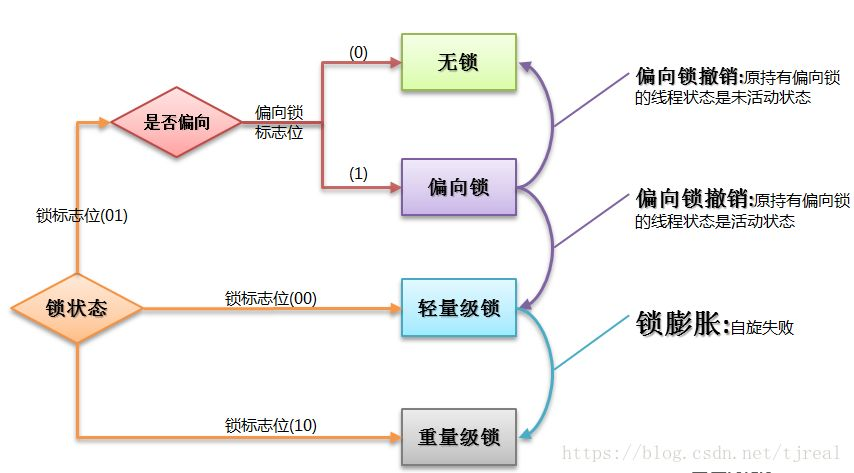
49. 什么是死锁？
死锁是指两个或两个以上的进程在执行过程中，由于竞争资源或者由于彼此通信而造成的一种阻塞的现象，若无外力作用，它们都将无法推进下去。此时称系统处于死锁状态或系统产生了死锁，这些永远在互相等待的进程称为死锁进程。是操作系统层面的一个错误，是进程死锁的简称，最早在 1965 年由 Dijkstra 在研究银行家算法时提出的，它是计算机操作系统乃至整个并发程序设计领域最难处理的问题之一。
50. 怎么防止死锁？
死锁的四个必要条件：
- 互斥条件：进程对所分配到的资源不允许其他进程进行访问，若其他进程访问该资源，只能等待，直至占有该资源的进程使用完成后释放该资源
- 请求和保持条件：进程获得一定的资源之后，又对其他资源发出请求，但是该资源可能被其他进程占有，此事请求阻塞，但又对自己获得的资源保持不放
- 不可剥夺条件：是指进程已获得的资源，在未完成使用之前，不可被剥夺，只能在使用完后自己释放
- 环路等待条件：是指进程发生死锁后，若干进程之间形成一种头尾相接的循环等待资源关系
这四个条件是死锁的必要条件，只要系统发生死锁，这些条件必然成立，而只要上述条件之 一不满足，就不会发生死锁。
理解了死锁的原因，尤其是产生死锁的四个必要条件，就可以最大可能地避免、预防和 解除死锁。
所以，在系统设计、进程调度等方面注意如何不让这四个必要条件成立，如何确 定资源的合理分配算法，避免进程永久占据系统资源。
此外，也要防止进程在处于等待状态的情况下占用资源。因此，对资源的分配要给予合理的规划。
51. ThreadLocal 是什么？有哪些使用场景？
线程局部变量是局限于线程内部的变量，属于线程自身所有，不在多个线程间共享。Java提供ThreadLocal类来支持线程局部变量，是一种实现线程安全的方式。但是在管理环境下（如 web 服务器）使用线程局部变量的时候要特别小心，在这种情况下，工作线程的生命周期比任何应用变量的生命周期都要长。任何线程局部变量一旦在工作完成后没有释放，Java 应用就存在内存泄露的风险。
52.说一下 synchronized 底层实现原理？
synchronized可以保证方法或者代码块在运行时，同一时刻只有一个方法可以进入到临界区，同时它还可以保证共享变量的内存可见性。
Java中每一个对象都可以作为锁，这是synchronized实现同步的基础：
- 普通同步方法，锁是当前实例对象
- 静态同步方法，锁是当前类的class对象
- 同步方法块，锁是括号里面的对象
53. synchronized 和 volatile 的区别是什么？
- volatile本质是在告诉jvm当前变量在寄存器（工作内存）中的值是不确定的，需要从主存中读取； synchronized则是锁定当前变量，只有当前线程可以访问该变量，其他线程被阻塞住。
- volatile仅能使用在变量级别；synchronized则可以使用在变量、方法、和类级别的。
- volatile仅能实现变量的修改可见性，不能保证原子性；而synchronized则可以保证变量的修改可见性和原子性。
- volatile不会造成线程的阻塞；synchronized可能会造成线程的阻塞。
- volatile标记的变量不会被编译器优化；synchronized标记的变量可以被编译器优化。
54. synchronized 和 Lock 有什么区别？
- 首先synchronized是java内置关键字，在jvm层面，Lock是个java类；
- synchronized无法判断是否获取锁的状态，Lock可以判断是否获取到锁；
- synchronized会自动释放锁(a 线程执行完同步代码会释放锁 ；b 线程执行过程中发生异常会释放锁)，Lock需在finally中手工释放锁（unlock()方法释放锁），否则容易造成线程死锁；
- 用synchronized关键字的两个线程1和线程2，如果当前线程1获得锁，线程2线程等待。如果线程1阻塞，线程2则会一直等待下去，而Lock锁就不一定会等待下去，如果尝试获取不到锁，线程可以不用一直等待就结束了；
- synchronized的锁可重入、不可中断、非公平，而Lock锁可重入、可判断、可公平（两者皆可）；
-
Lock锁适合大量同步的代码的同步问题，synchronized锁适合代码少量的同步问题。
55. synchronized 和 ReentrantLock 区别是什么？
synchronized是和if、else、for、while一样的关键字，ReentrantLock是类，这是二者的本质区别。既然ReentrantLock是类，那么它就提供了比synchronized更多更灵活的特性，可以被继承、可以有方法、可以有各种各样的类变量，ReentrantLock比synchronized的扩展性体现在几点上：
- ReentrantLock可以对获取锁的等待时间进行设置，这样就避免了死锁
- ReentrantLock可以获取各种锁的信息
- ReentrantLock可以灵活地实现多路通知
另外，二者的锁机制其实也是不一样的:ReentrantLock底层调用的是Unsafe的park方法加锁，synchronized操作的应该是对象头中mark word。
56. 说一下 atomic 的原理？
Atomic包中的类基本的特性就是在多线程环境下，当有多个线程同时对单个（包括基本类型及引用类型）变量进行操作时，具有排他性，即当多个线程同时对该变量的值进行更新时，仅有一个线程能成功，而未成功的线程可以向自旋锁一样，继续尝试，一直等到执行成功。
Atomic系列的类中的核心方法都会调用unsafe类中的几个本地方法。我们需要先知道一个东西就是Unsafe类，全名为：sun.misc.Unsafe，这个类包含了大量的对C代码的操作，包括很多直接内存分配以及原子操作的调用，而它之所以标记为非安全的，是告诉你这个里面大量的方法调用都会存在安全隐患，需要小心使用，否则会导致严重的后果，例如在通过unsafe分配内存的时候，如果自己指定某些区域可能会导致一些类似C++一样的指针越界到其他进程的问题。
四、反射
57. 什么是反射？
反射主要是指程序可以访问、检测和修改它本身状态或行为的一种能力
Java反射：
在Java运行时环境中，对于任意一个类，能否知道这个类有哪些属性和方法？对于任意一个对象，能否调用它的任意一个方法
Java反射机制主要提供了以下功能：
- 在运行时判断任意一个对象所属的类。
- 在运行时构造任意一个类的对象。
- 在运行时判断任意一个类所具有的成员变量和方法。
- 在运行时调用任意一个对象的方法。
58. 什么是 java 序列化？什么情况下需要序列化？
简单说就是为了保存在内存中的各种对象的状态（也就是实例变量，不是方法），并且可以把保存的对象状态再读出来。虽然你可以用你自己的各种各样的方法来保存object states，但是Java给你提供一种应该比你自己好的保存对象状态的机制，那就是序列化。
什么情况下需要序列化：
a）当你想把的内存中的对象状态保存到一个文件中或者数据库中时候；
b）当你想用套接字在网络上传送对象的时候；
c）当你想通过RMI传输对象的时候；
59. 动态代理是什么？有哪些应用？
动态代理：
当想要给实现了某个接口的类中的方法，加一些额外的处理。比如说加日志，加事务等。可以给这个类创建一个代理，故名思议就是创建一个新的类，这个类不仅包含原来类方法的功能，而且还在原来的基础上添加了额外处理的新类。这个代理类并不是定义好的，是动态生成的。具有解耦意义，灵活，扩展性强。
动态代理的应用：
- Spring的AOP
- 加事务
- 加权限
- 加日志
60. 怎么实现动态代理？
首先必须定义一个接口，还要有一个InvocationHandler(将实现接口的类的对象传递给它)处理类。再有一个工具类Proxy(习惯性将其称为代理类，因为调用他的newInstance()可以产生代理对象,其实他只是一个产生代理对象的工具类）。利用到InvocationHandler，拼接代理类源码，将其编译生成代理类的二进制码，利用加载器加载，并将其实例化产生代理对象，最后返回。
五、对象拷贝
61. 为什么要使用克隆？
想对一个对象进行处理，又想保留原有的数据进行接下来的操作，就需要克隆了，Java语言中克隆针对的是类的实例。
62. 如何实现对象克隆？
有两种方式：
1). 实现Cloneable接口并重写Object类中的clone()方法；
2). 实现Serializable接口，通过对象的序列化和反序列化实现克隆，可以实现真正的深度克隆，代码如下：
1 import java.io.ByteArrayInputStream;
2 import java.io.ByteArrayOutputStream;
3 import java.io.ObjectInputStream;
4 import java.io.ObjectOutputStream;
5 import java.io.Serializable;
6
7 public class MyUtil {
8
9 private MyUtil() {
10 throw new AssertionError();
11 }
12
13 @SuppressWarnings("unchecked")
14 public static <T extends Serializable> T clone(T obj) throws Exception {
15 ByteArrayOutputStream bout = new ByteArrayOutputStream();
16 ObjectOutputStream oos = new ObjectOutputStream(bout);
17 oos.writeObject(obj);
18
19 ByteArrayInputStream bin = new ByteArrayInputStream(bout.toByteArray());
20 ObjectInputStream ois = new ObjectInputStream(bin);
21 return (T) ois.readObject();
22
23 // 说明：调用ByteArrayInputStream或ByteArrayOutputStream对象的close方法没有任何意义
24 // 这两个基于内存的流只要垃圾回收器清理对象就能够释放资源，这一点不同于对外部资源（如文件流）的释放
25 }
26 }下面是测试代码：
1
2 import java.io.Serializable;
3
4 /**
5 * 人类
6 * @author nnngu
7 *
8 */
9 class Person implements Serializable {
10 private static final long serialVersionUID = -9102017020286042305L;
11
12 private String name; // 姓名
13 private int age; // 年龄
14 private Car car; // 座驾
15
16 public Person(String name, int age, Car car) {
17 this.name = name;
18 this.age = age;
19 this.car = car;
20 }
21
22 public String getName() {
23 return name;
24 }
25
26 public void setName(String name) {
27 this.name = name;
28 }
29
30 public int getAge() {
31 return age;
32 }
33
34 public void setAge(int age) {
35 this.age = age;
36 }
37
38 public Car getCar() {
39 return car;
40 }
41
42 public void setCar(Car car) {
43 this.car = car;
44 }
45
46 @Override
47 public String toString() {
48 return "Person [name=" + name + ", age=" + age + ", car=" + car + "]";
49 }
50
51 } 1
2 /**
3 * 小汽车类
4 * @author nnngu
5 *
6 */
7 class Car implements Serializable {
8 private static final long serialVersionUID = -5713945027627603702L;
9
10 private String brand; // 品牌
11 private int maxSpeed; // 最高时速
12
13 public Car(String brand, int maxSpeed) {
14 this.brand = brand;
15 this.maxSpeed = maxSpeed;
16 }
17
18 public String getBrand() {
19 return brand;
20 }
21
22 public void setBrand(String brand) {
23 this.brand = brand;
24 }
25
26 public int getMaxSpeed() {
27 return maxSpeed;
28 }
29
30 public void setMaxSpeed(int maxSpeed) {
31 this.maxSpeed = maxSpeed;
32 }
33
34 @Override
35 public String toString() {
36 return "Car [brand=" + brand + ", maxSpeed=" + maxSpeed + "]";
37 }
38
39 } 1 class CloneTest {
2
3 public static void main(String[] args) {
4 try {
5 Person p1 = new Person("郭靖", 33, new Car("Benz", 300));
6 Person p2 = MyUtil.clone(p1); // 深度克隆
7 p2.getCar().setBrand("BYD");
8 // 修改克隆的Person对象p2关联的汽车对象的品牌属性
9 // 原来的Person对象p1关联的汽车不会受到任何影响
10 // 因为在克隆Person对象时其关联的汽车对象也被克隆了
11 System.out.println(p1);
12 } catch (Exception e) {
13 e.printStackTrace();
14 }
15 }
16 }注意：基于序列化和反序列化实现的克隆不仅仅是深度克隆，更重要的是通过泛型限定，可以检查出要克隆的对象是否支持序列化，这项检查是编译器完成的，不是在运行时抛出异常，这种是方案明显优于使用Object类的clone方法克隆对象。让问题在编译的时候暴露出来总是好过把问题留到运行时。
63. 深拷贝和浅拷贝区别是什么？
- 浅拷贝只是复制了对象的引用地址，两个对象指向同一个内存地址，所以修改其中任意的值，另一个值都会随之变化，这就是浅拷贝（例：assign()）
- 深拷贝是将对象及值复制过来，两个对象修改其中任意的值另一个值不会改变，这就是深拷贝（例：JSON.parse()和JSON.stringify()，但是此方法无法复制函数类型）
六、Java Web
64. jsp 和 servlet 有什么区别？
- jsp经编译后就变成了Servlet.（JSP的本质就是Servlet，JVM只能识别java的类，不能识别JSP的代码，Web容器将JSP的代码编译成JVM能够识别的java类）
- jsp更擅长表现于页面显示，servlet更擅长于逻辑控制。
- Servlet中没有内置对象，Jsp中的内置对象都是必须通过HttpServletRequest对象，HttpServletResponse对象以及HttpServlet对象得到。
- Jsp是Servlet的一种简化，使用Jsp只需要完成程序员需要输出到客户端的内容，Jsp中的Java脚本如何镶嵌到一个类中，由Jsp容器完成。而Servlet则是个完整的Java类，这个类的Service方法用于生成对客户端的响应。
65. jsp 有哪些内置对象？作用分别是什么？
JSP有9个内置对象：
- request：封装客户端的请求，其中包含来自GET或POST请求的参数；
- response：封装服务器对客户端的响应；
- pageContext：通过该对象可以获取其他对象；
- session：封装用户会话的对象；
- application：封装服务器运行环境的对象；
- out：输出服务器响应的输出流对象；
- config：Web应用的配置对象；
- page：JSP页面本身（相当于Java程序中的this）；
- exception：封装页面抛出异常的对象。
66. 说一下 jsp 的 4 种作用域？
JSP中的四种作用域包括page、request、session和application，具体来说：
- page代表与一个页面相关的对象和属性。
- request代表与Web客户机发出的一个请求相关的对象和属性。一个请求可能跨越多个页面，涉及多个Web组件；需要在页面显示的临时数据可以置于此作用域。
- session代表与某个用户与服务器建立的一次会话相关的对象和属性。跟某个用户相关的数据应该放在用户自己的session中。
- application代表与整个Web应用程序相关的对象和属性，它实质上是跨越整个Web应用程序，包括多个页面、请求和会话的一个全局作用域。
67. session 和 cookie 有什么区别？
- 由于HTTP协议是无状态的协议，所以服务端需要记录用户的状态时，就需要用某种机制来识具体的用户，这个机制就是Session.典型的场景比如购物车，当你点击下单按钮时，由于HTTP协议无状态，所以并不知道是哪个用户操作的，所以服务端要为特定的用户创建了特定的Session，用用于标识这个用户，并且跟踪用户，这样才知道购物车里面有几本书。这个Session是保存在服务端的，有一个唯一标识。在服务端保存Session的方法很多，内存、数据库、文件都有。集群的时候也要考虑Session的转移，在大型的网站，一般会有专门的Session服务器集群，用来保存用户会话，这个时候 Session 信息都是放在内存的，使用一些缓存服务比如Memcached之类的来放 Session。
- 思考一下服务端如何识别特定的客户？这个时候Cookie就登场了。每次HTTP请求的时候，客户端都会发送相应的Cookie信息到服务端。实际上大多数的应用都是用 Cookie 来实现Session跟踪的，第一次创建Session的时候，服务端会在HTTP协议中告诉客户端，需要在 Cookie 里面记录一个Session ID，以后每次请求把这个会话ID发送到服务器，我就知道你是谁了。有人问，如果客户端的浏览器禁用了 Cookie 怎么办？一般这种情况下，会使用一种叫做URL重写的技术来进行会话跟踪，即每次HTTP交互，URL后面都会被附加上一个诸如 sid=xxxxx 这样的参数，服务端据此来识别用户。
- Cookie其实还可以用在一些方便用户的场景下，设想你某次登陆过一个网站，下次登录的时候不想再次输入账号了，怎么办？这个信息可以写到Cookie里面，访问网站的时候，网站页面的脚本可以读取这个信息，就自动帮你把用户名给填了，能够方便一下用户。这也是Cookie名称的由来，给用户的一点甜头。所以，总结一下：Session是在服务端保存的一个数据结构，用来跟踪用户的状态，这个数据可以保存在集群、数据库、文件中；Cookie是客户端保存用户信息的一种机制，用来记录用户的一些信息，也是实现Session的一种方式。
68. 说一下 session 的工作原理？
其实session是一个存在服务器上的类似于一个散列表格的文件。里面存有我们需要的信息，在我们需要用的时候可以从里面取出来。类似于一个大号的map吧，里面的键存储的是用户的sessionid，用户向服务器发送请求的时候会带上这个sessionid。这时就可以从中取出对应的值了。
69. 如果客户端禁止 cookie 能实现 session 还能用吗？
Cookie与 Session，一般认为是两个独立的东西，Session采用的是在服务器端保持状态的方案，而Cookie采用的是在客户端保持状态的方案。但为什么禁用Cookie就不能得到Session呢？因为Session是用Session ID来确定当前对话所对应的服务器Session，而Session ID是通过Cookie来传递的，禁用Cookie相当于失去了Session ID，也就得不到Session了。
假定用户关闭Cookie的情况下使用Session，其实现途径有以下几种：
- 设置php.ini配置文件中的“session.use_trans_sid = 1”，或者编译时打开打开了“--enable-trans-sid”选项，让PHP自动跨页传递Session ID。
- 手动通过URL传值、隐藏表单传递Session ID。
- 用文件、数据库等形式保存Session ID，在跨页过程中手动调用。
70. spring mvc 和 struts 的区别是什么？
- 拦截机制的不同
Struts2是类级别的拦截，每次请求就会创建一个Action，和Spring整合时Struts2的ActionBean注入作用域是原型模式prototype，然后通过setter，getter吧request数据注入到属性。Struts2中，一个Action对应一个request，response上下文，在接收参数时，可以通过属性接收，这说明属性参数是让多个方法共享的。Struts2中Action的一个方法可以对应一个url，而其类属性却被所有方法共享，这也就无法用注解或其他方式标识其所属方法了，只能设计为多例。
SpringMVC是方法级别的拦截，一个方法对应一个Request上下文，所以方法直接基本上是独立的，独享request，response数据。而每个方法同时又何一个url对应，参数的传递是直接注入到方法中的，是方法所独有的。处理结果通过ModeMap返回给框架。在Spring整合时，SpringMVC的Controller Bean默认单例模式Singleton，所以默认对所有的请求，只会创建一个Controller，有应为没有共享的属性，所以是线程安全的，如果要改变默认的作用域，需要添加@Scope注解修改。
Struts2有自己的拦截Interceptor机制，SpringMVC这是用的是独立的Aop方式，这样导致Struts2的配置文件量还是比SpringMVC大。
- 底层框架的不同
Struts2采用Filter（StrutsPrepareAndExecuteFilter）实现，SpringMVC（DispatcherServlet）则采用Servlet实现。Filter在容器启动之后即初始化；服务停止以后坠毁，晚于Servlet。Servlet在是在调用时初始化，先于Filter调用，服务停止后销毁。
- 性能方面
Struts2是类级别的拦截，每次请求对应实例一个新的Action，需要加载所有的属性值注入，SpringMVC实现了零配置，由于SpringMVC基于方法的拦截，有加载一次单例模式bean注入。所以，SpringMVC开发效率和性能高于Struts2。
- 配置方面
spring MVC和Spring是无缝的。从这个项目的管理和安全上也比Struts2高。
71. 如何避免 sql 注入？
- PreparedStatement（简单又有效的方法）
- 使用正则表达式过滤传入的参数
- 字符串过滤
- JSP中调用该函数检查是否包函非法字符
- JSP页面判断代码
72. 什么是 XSS 攻击，如何避免？
XSS攻击又称CSS,全称Cross Site Script （跨站脚本攻击），其原理是攻击者向有XSS漏洞的网站中输入恶意的 HTML 代码，当用户浏览该网站时，这段 HTML 代码会自动执行，从而达到攻击的目的。XSS 攻击类似于 SQL 注入攻击，SQL注入攻击中以SQL语句作为用户输入，从而达到查询/修改/删除数据的目的，而在xss攻击中，通过插入恶意脚本，实现对用户游览器的控制，获取用户的一些信息。 XSS是 Web 程序中常见的漏洞，XSS 属于被动式且用于客户端的攻击方式。
XSS防范的总体思路是：对输入(和URL参数)进行过滤，对输出进行编码。
73. 什么是 CSRF 攻击，如何避免？
CSRF（Cross-site request forgery）也被称为 one-click attack或者 session riding，中文全称是叫跨站请求伪造。一般来说，攻击者通过伪造用户的浏览器的请求，向访问一个用户自己曾经认证访问过的网站发送出去，使目标网站接收并误以为是用户的真实操作而去执行命令。常用于盗取账号、转账、发送虚假消息等。攻击者利用网站对请求的验证漏洞而实现这样的攻击行为，网站能够确认请求来源于用户的浏览器，却不能验证请求是否源于用户的真实意愿下的操作行为。
如何避免：
1. 验证 HTTP Referer 字段
HTTP头中的Referer字段记录了该 HTTP 请求的来源地址。在通常情况下，访问一个安全受限页面的请求来自于同一个网站，而如果黑客要对其实施 CSRF
攻击，他一般只能在他自己的网站构造请求。因此，可以通过验证Referer值来防御CSRF 攻击。
2. 使用验证码
关键操作页面加上验证码，后台收到请求后通过判断验证码可以防御CSRF。但这种方法对用户不太友好。
3. 在请求地址中添加token并验证
CSRF 攻击之所以能够成功，是因为黑客可以完全伪造用户的请求，该请求中所有的用户验证信息都是存在于cookie中，因此黑客可以在不知道这些验证信息的情况下直接利用用户自己的cookie 来通过安全验证。要抵御 CSRF，关键在于在请求中放入黑客所不能伪造的信息，并且该信息不存在于 cookie 之中。可以在 HTTP 请求中以参数的形式加入一个随机产生的 token，并在服务器端建立一个拦截器来验证这个 token，如果请求中没有token或者 token 内容不正确，则认为可能是 CSRF 攻击而拒绝该请求。这种方法要比检查 Referer 要安全一些，token 可以在用户登陆后产生并放于session之中，然后在每次请求时把token 从 session 中拿出，与请求中的 token 进行比对，但这种方法的难点在于如何把 token 以参数的形式加入请求。
对于 GET 请求，token 将附在请求地址之后，这样 URL 就变成 http://url?csrftoken=tokenvalue。
而对于 POST 请求来说，要在 form 的最后加上 <input type="hidden" name="csrftoken" value="tokenvalue"/>，这样就把token以参数的形式加入请求了。
4. 在HTTP 头中自定义属性并验证
这种方法也是使用 token 并进行验证，和上一种方法不同的是，这里并不是把 token 以参数的形式置于 HTTP 请求之中，而是把它放到 HTTP 头中自定义的属性里。通过 XMLHttpRequest 这个类，可以一次性给所有该类请求加上 csrftoken 这个 HTTP 头属性，并把 token 值放入其中。这样解决了上种方法在请求中加入 token 的不便，同时，通过 XMLHttpRequest 请求的地址不会被记录到浏览器的地址栏，也不用担心 token 会透过 Referer 泄露到其他网站中去。
七、异常
74. throw 和 throws 的区别？
throws是用来声明一个方法可能抛出的所有异常信息，throws是将异常声明但是不处理，而是将异常往上传，谁调用我就交给谁处理。而throw则是指抛出的一个具体的异常类型。
75. final、finally、finalize 有什么区别？
- final可以修饰类、变量、方法，修饰类表示该类不能被继承、修饰方法表示该方法不能被重写、修饰变量表示该变量是一个常量不能被重新赋值。
- finally一般作用在try-catch代码块中，在处理异常的时候，通常我们将一定要执行的代码方法finally代码块中，表示不管是否出现异常，该代码块都会执行，一般用来存放一些关闭资源的代码。
- finalize是一个方法，属于Object类的一个方法，而Object类是所有类的父类，该方法一般由垃圾回收器来调用，当我们调用System的gc()方法的时候，由垃圾回收器调用finalize(),回收垃圾。
76. try-catch-finally 中哪个部分可以省略？
答：catch 可以省略
原因：
更为严格的说法其实是：try只适合处理运行时异常，try+catch适合处理运行时异常+普通异常。也就是说，如果你只用try去处理普通异常却不加以catch处理，编译是通不过的，因为编译器硬性规定，普通异常如果选择捕获，则必须用catch显示声明以便进一步处理。而运行时异常在编译时没有如此规定，所以catch可以省略，你加上catch编译器也觉得无可厚非。
理论上，编译器看任何代码都不顺眼，都觉得可能有潜在的问题，所以你即使对所有代码加上try，代码在运行期时也只不过是在正常运行的基础上加一层皮。但是你一旦对一段代码加上try，就等于显示地承诺编译器，对这段代码可能抛出的异常进行捕获而非向上抛出处理。如果是普通异常，编译器要求必须用catch捕获以便进一步处理；如果运行时异常，捕获然后丢弃并且+finally扫尾处理，或者加上catch捕获以便进一步处理。
至于加上finally，则是在不管有没捕获异常，都要进行的“扫尾”处理。
77. try-catch-finally 中，如果 catch 中 return 了，finally 还会执行吗？
答：会执行，在 return 前执行。
代码示例1：
1 /*
2 * java面试题--如果catch里面有return语句，finally里面的代码还会执行吗？
3 */
4 public class FinallyDemo2 {
5 public static void main(String[] args) {
6 System.out.println(getInt());
7 }
8
9 public static int getInt() {
10 int a = 10;
11 try {
12 System.out.println(a / 0);
13 a = 20;
14 } catch (ArithmeticException e) {
15 a = 30;
16 return a;
17 /*
18 * return a 在程序执行到这一步的时候，这里不是return a 而是 return 30；这个返回路径就形成了
19 * 但是呢，它发现后面还有finally，所以继续执行finally的内容，a=40
20 * 再次回到以前的路径,继续走return 30，形成返回路径之后，这里的a就不是a变量了，而是常量30
21 */
22 } finally {
23 a = 40;
24 }
25
26 // return a;
27 }
28 }执行结果：30
代码示例2：
1 package com.java_02;
2
3 /*
4 * java面试题--如果catch里面有return语句，finally里面的代码还会执行吗？
5 */
6 public class FinallyDemo2 {
7 public static void main(String[] args) {
8 System.out.println(getInt());
9 }
10
11 public static int getInt() {
12 int a = 10;
13 try {
14 System.out.println(a / 0);
15 a = 20;
16 } catch (ArithmeticException e) {
17 a = 30;
18 return a;
19 /*
20 * return a 在程序执行到这一步的时候，这里不是return a 而是 return 30；这个返回路径就形成了
21 * 但是呢，它发现后面还有finally，所以继续执行finally的内容，a=40
22 * 再次回到以前的路径,继续走return 30，形成返回路径之后，这里的a就不是a变量了，而是常量30
23 */
24 } finally {
25 a = 40;
26 return a; //如果这样，就又重新形成了一条返回路径，由于只能通过1个return返回，所以这里直接返回40
27 }
28
29 // return a;
30 }
31 }执行结果：40
78. 常见的异常类有哪些？
- NullPointerException：当应用程序试图访问空对象时，则抛出该异常。
- SQLException：提供关于数据库访问错误或其他错误信息的异常。
- IndexOutOfBoundsException：指示某排序索引（例如对数组、字符串或向量的排序）超出范围时抛出。
- NumberFormatException：当应用程序试图将字符串转换成一种数值类型，但该字符串不能转换为适当格式时，抛出该异常。
- FileNotFoundException：当试图打开指定路径名表示的文件失败时，抛出此异常。
- IOException：当发生某种I/O异常时，抛出此异常。此类是失败或中断的I/O操作生成的异常的通用类。
- ClassCastException：当试图将对象强制转换为不是实例的子类时，抛出该异常。
- ArrayStoreException：试图将错误类型的对象存储到一个对象数组时抛出的异常。
- IllegalArgumentException：抛出的异常表明向方法传递了一个不合法或不正确的参数。
- ArithmeticException：当出现异常的运算条件时，抛出此异常。例如，一个整数“除以零”时，抛出此类的一个实例。
- NegativeArraySizeException：如果应用程序试图创建大小为负的数组，则抛出该异常。
- NoSuchMethodException：无法找到某一特定方法时，抛出该异常。
- SecurityException：由安全管理器抛出的异常，指示存在安全侵犯。
- UnsupportedOperationException：当不支持请求的操作时，抛出该异常。
- RuntimeExceptionRuntimeException：是那些可能在Java虚拟机正常运行期间抛出的异常的超类。
八、网络
79. http 响应码 301 和 302 代表的是什么？有什么区别？
答：301，302 都是HTTP状态的编码，都代表着某个URL发生了转移。
区别：
- 301 redirect: 301 代表永久性转移(Permanently Moved)。
- 302 redirect: 302 代表暂时性转移(Temporarily Moved )。
80. forward 和 redirect 的区别？
Forward和Redirect代表了两种请求转发方式：直接转发和间接转发。
直接转发方式（Forward），客户端和浏览器只发出一次请求，Servlet、HTML、JSP或其它信息资源，由第二个信息资源响应该请求，在请求对象request中，保存的对象对于每个信息资源是共享的。
间接转发方式（Redirect）实际是两次HTTP请求，服务器端在响应第一次请求的时候，让浏览器再向另外一个URL发出请求，从而达到转发的目的。
举个通俗的例子：
直接转发就相当于：“A找B借钱，B说没有，B去找C借，借到借不到都会把消息传递给A”；
间接转发就相当于："A找B借钱，B说没有，让A去找C借"。
81. 简述 tcp 和 udp的区别？
- TCP面向连接（如打电话要先拨号建立连接）;UDP是无连接的，即发送数据之前不需要建立连接。
- TCP提供可靠的服务。也就是说，通过TCP连接传送的数据，无差错，不丢失，不重复，且按序到达;UDP尽最大努力交付，即不保证可靠交付。
- Tcp通过校验和，重传控制，序号标识，滑动窗口、确认应答实现可靠传输。如丢包时的重发控制，还可以对次序乱掉的分包进行顺序控制。
- UDP具有较好的实时性，工作效率比TCP高，适用于对高速传输和实时性有较高的通信或广播通信。
- 每一条TCP连接只能是点到点的;UDP支持一对一，一对多，多对一和多对多的交互通信。
- TCP对系统资源要求较多，UDP对系统资源要求较少。
82. tcp 为什么要三次握手，两次不行吗？为什么？
为了实现可靠数据传输， TCP 协议的通信双方， 都必须维护一个序列号， 以标识发送出去的数据包中， 哪些是已经被对方收到的。 三次握手的过程即是通信双方相互告知序列号起始值， 并确认对方已经收到了序列号起始值的必经步骤。
如果只是两次握手， 至多只有连接发起方的起始序列号能被确认， 另一方选择的序列号则得不到确认。
83. 说一下 tcp 粘包是怎么产生的？
①. 发送方产生粘包
采用TCP协议传输数据的客户端与服务器经常是保持一个长连接的状态（一次连接发一次数据不存在粘包），双方在连接不断开的情况下，可以一直传输数据；但当发送的数据包过于的小时，那么TCP协议默认的会启用Nagle算法，将这些较小的数据包进行合并发送（缓冲区数据发送是一个堆压的过程）；这个合并过程就是在发送缓冲区中进行的，也就是说数据发送出来它已经是粘包的状态了。
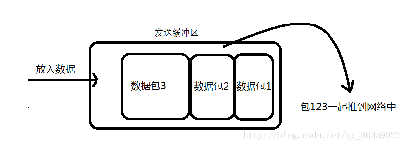
②. 接收方产生粘包
接收方采用TCP协议接收数据时的过程是这样的：数据到底接收方，从网络模型的下方传递至传输层，传输层的TCP协议处理是将其放置接收缓冲区，然后由应用层来主动获取（C语言用recv、read等函数）；这时会出现一个问题，就是我们在程序中调用的读取数据函数不能及时的把缓冲区中的数据拿出来，而下一个数据又到来并有一部分放入的缓冲区末尾，等我们读取数据时就是一个粘包。（放数据的速度 > 应用层拿数据速度）
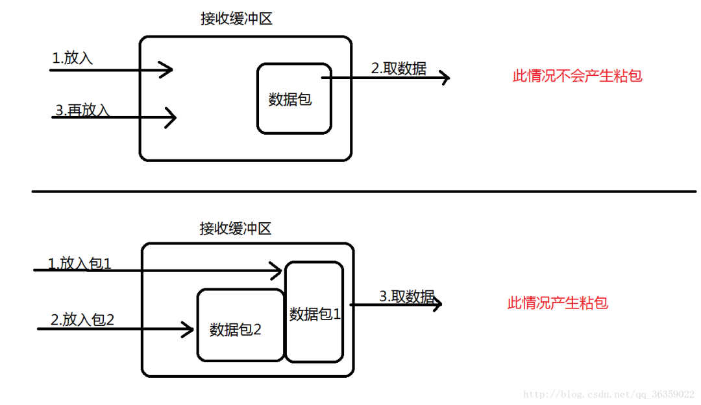
84. OSI 的七层模型都有哪些？
- 应用层：网络服务与最终用户的一个接口。
- 表示层：数据的表示、安全、压缩。
- 会话层：建立、管理、终止会话。
- 传输层：定义传输数据的协议端口号，以及流控和差错校验。
- 网络层：进行逻辑地址寻址，实现不同网络之间的路径选择。
- 数据链路层：建立逻辑连接、进行硬件地址寻址、差错校验等功能。
- 物理层：建立、维护、断开物理连接。
85. get 和 post 请求有哪些区别？
- GET在浏览器回退时是无害的，而POST会再次提交请求。
- GET产生的URL地址可以被Bookmark，而POST不可以。
- GET请求会被浏览器主动cache，而POST不会，除非手动设置。
- GET请求只能进行url编码，而POST支持多种编码方式。
- GET请求参数会被完整保留在浏览器历史记录里，而POST中的参数不会被保留。
- GET请求在URL中传送的参数是有长度限制的，而POST么有。
- 对参数的数据类型，GET只接受ASCII字符，而POST没有限制。
- GET比POST更不安全，因为参数直接暴露在URL上，所以不能用来传递敏感信息。
- GET参数通过URL传递，POST放在Request body中。
86. 如何实现跨域？
方式一：图片ping或script标签跨域
图片ping常用于跟踪用户点击页面或动态广告曝光次数。
script标签可以得到从其他来源数据，这也是JSONP依赖的根据。
方式二：JSONP跨域
JSONP（JSON with Padding）是数据格式JSON的一种“使用模式”，可以让网页从别的网域要数据。根据 XmlHttpRequest 对象受到同源策略的影响，而利用 <script>元素的这个开放策略，网页可以得到从其他来源动态产生的JSON数据，而这种使用模式就是所谓的 JSONP。用JSONP抓到的数据并不是JSON，而是任意的JavaScript，用 JavaScript解释器运行而不是用JSON解析器解析。所有，通过Chrome查看所有JSONP发送的Get请求都是js类型，而非XHR。
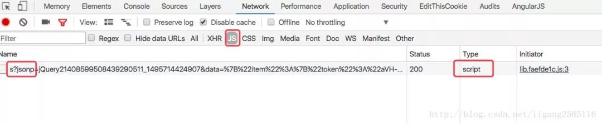
缺点：
- 只能使用Get请求
- 不能注册success、error等事件监听函数，不能很容易的确定JSONP请求是否失败
- JSONP是从其他域中加载代码执行，容易受到跨站请求伪造的攻击，其安全性无法确保
方式三：CORS
Cross-Origin Resource Sharing（CORS）跨域资源共享是一份浏览器技术的规范，提供了 Web 服务从不同域传来沙盒脚本的方法，以避开浏览器的同源策略，确保安全的跨域数据传输。现代浏览器使用CORS在API容器如XMLHttpRequest来减少HTTP请求的风险来源。与 JSONP 不同，CORS 除了 GET 要求方法以外也支持其他的 HTTP 要求。服务器一般需要增加如下响应头的一种或几种：
1 Access-Control-Allow-Origin: *
2 Access-Control-Allow-Methods: POST, GET, OPTIONS
3 Access-Control-Allow-Headers: X-PINGOTHER, Content-Type
4 Access-Control-Max-Age: 86400跨域请求默认不会携带Cookie信息，如果需要携带，请配置下述参数：
1 "Access-Control-Allow-Credentials": true
2 // Ajax设置
3 "withCredentials": true方式四：window.name+iframe
window.name通过在iframe（一般动态创建i）中加载跨域HTML文件来起作用。然后，HTML文件将传递给请求者的字符串内容赋值给window.name。然后，请求者可以检索window.name值作为响应。
- iframe标签的跨域能力；
- window.name属性值在文档刷新后依旧存在的能力（且最大允许2M左右）。
每个iframe都有包裹它的window，而这个window是top window的子窗口。contentWindow属性返回<iframe>元素的Window对象。你可以使用这个Window对象来访问iframe的文档及其内部DOM。
1 <!--
2 下述用端口
3 10000表示：domainA
4 10001表示：domainB
5 -->
6
7 <!-- localhost:10000 -->
8 <script>
9 var iframe = document.createElement('iframe');
10 iframe.style.display = 'none'; // 隐藏
11
12 var state = 0; // 防止页面无限刷新
13 iframe.onload = function() {
14 if(state === 1) {
15 console.log(JSON.parse(iframe.contentWindow.name));
16 // 清除创建的iframe
17 iframe.contentWindow.document.write('');
18 iframe.contentWindow.close();
19 document.body.removeChild(iframe);
20 } else if(state === 0) {
21 state = 1;
22 // 加载完成，指向当前域，防止错误(proxy.html为空白页面)
23 // Blocked a frame with origin "http://localhost:10000" from accessing a cross-origin frame.
24 iframe.contentWindow.location = 'http://localhost:10000/proxy.html';
25 }
26 };
27
28 iframe.src = 'http://localhost:10001';
29 document.body.appendChild(iframe);
30 </script>
31
32 <!-- localhost:10001 -->
33 <!DOCTYPE html>
34 ...
35 <script>
36 window.name = JSON.stringify({a: 1, b: 2});
37 </script>
38 </html>方式五：window.postMessage()
HTML5新特性，可以用来向其他所有的 window 对象发送消息。需要注意的是我们必须要保证所有的脚本执行完才发送 MessageEvent，如果在函数执行的过程中调用了它，就会让后面的函数超时无法执行。
下述代码实现了跨域存储localStorage
1 <!--
2 下述用端口
3 10000表示：domainA
4 10001表示：domainB
5 -->
6
7 <!-- localhost:10000 -->
8 <iframe src="http://localhost:10001/msg.html" name="myPostMessage" style="display:none;">
9 </iframe>
10
11 <script>
12 function main() {
13 LSsetItem('test', 'Test: ' + new Date());
14 LSgetItem('test', function(value) {
15 console.log('value: ' + value);
16 });
17 LSremoveItem('test');
18 }
19
20 var callbacks = {};
21 window.addEventListener('message', function(event) {
22 if (event.source === frames['myPostMessage']) {
23 console.log(event)
24 var data = /^#localStorage#(\d+)(null)?#([\S\s]*)/.exec(event.data);
25 if (data) {
26 if (callbacks[data[1]]) {
27 callbacks[data[1]](data[2] === 'null' ? null : data[3]);
28 }
29 delete callbacks[data[1]];
30 }
31 }
32 }, false);
33
34 var domain = '*';
35 // 增加
36 function LSsetItem(key, value) {
37 var obj = {
38 setItem: key,
39 value: value
40 };
41 frames['myPostMessage'].postMessage(JSON.stringify(obj), domain);
42 }
43 // 获取
44 function LSgetItem(key, callback) {
45 var identifier = new Date().getTime();
46 var obj = {
47 identifier: identifier,
48 getItem: key
49 };
50 callbacks[identifier] = callback;
51 frames['myPostMessage'].postMessage(JSON.stringify(obj), domain);
52 }
53 // 删除
54 function LSremoveItem(key) {
55 var obj = {
56 removeItem: key
57 };
58 frames['myPostMessage'].postMessage(JSON.stringify(obj), domain);
59 }
60 </script>
61
62 <!-- localhost:10001 -->
63 <script>
64 window.addEventListener('message', function(event) {
65 console.log('Receiver debugging', event);
66 if (event.origin == 'http://localhost:10000') {
67 var data = JSON.parse(event.data);
68 if ('setItem' in data) {
69 localStorage.setItem(data.setItem, data.value);
70 } else if ('getItem' in data) {
71 var gotItem = localStorage.getItem(data.getItem);
72 event.source.postMessage(
73 '#localStorage#' + data.identifier +
74 (gotItem === null ? 'null#' : '#' + gotItem),
75 event.origin
76 );
77 } else if ('removeItem' in data) {
78 localStorage.removeItem(data.removeItem);
79 }
80 }
81 }, false);
82 </script>注意Safari一下，会报错：
Blocked a frame with origin “http://localhost:10001” from accessing a frame with origin “http://localhost:10000“. Protocols, domains, and ports must match.
避免该错误，可以在Safari浏览器中勾选开发菜单==>停用跨域限制。或者只能使用服务器端转存的方式实现，因为Safari浏览器默认只支持CORS跨域请求。
方式六：修改document.domain跨子域
前提条件：这两个域名必须属于同一个基础域名!而且所用的协议，端口都要一致，否则无法利用document.domain进行跨域，所以只能跨子域
在根域范围内，允许把domain属性的值设置为它的上一级域。例如，在”aaa.xxx.com”域内，可以把domain设置为 “xxx.com” 但不能设置为 “xxx.org” 或者”com”。
现在存在两个域名aaa.xxx.com和bbb.xxx.com。在aaa下嵌入bbb的页面，由于其document.name不一致，无法在aaa下操作bbb的js。可以在aaa和bbb下通过js将document.name = 'xxx.com';设置一致，来达到互相访问的作用。
方式七：WebSocket
WebSocket protocol 是HTML5一种新的协议。它实现了浏览器与服务器全双工通信，同时允许跨域通讯，是server push技术的一种很棒的实现。相关文章，请查看：WebSocket、WebSocket-SockJS
需要注意：WebSocket对象不支持DOM 2级事件侦听器，必须使用DOM 0级语法分别定义各个事件。
方式八：代理
同源策略是针对浏览器端进行的限制，可以通过服务器端来解决该问题
DomainA客户端（浏览器） ==> DomainA服务器 ==> DomainB服务器 ==> DomainA客户端（浏览器）
来源：blog.csdn.net/ligang2585116/article/details/73072868
87.说一下 JSONP 实现原理？
jsonp 即 json+padding，动态创建script标签，利用script标签的src属性可以获取任何域下的js脚本，通过这个特性(也可以说漏洞)，服务器端不在返货json格式，而是返回一段调用某个函数的js代码，在src中进行了调用，这样实现了跨域。
九、设计模式
88. 说一下你熟悉的设计模式？
89. 简单工厂和抽象工厂有什么区别？
简单工厂模式：
这个模式本身很简单而且使用在业务较简单的情况下。一般用于小项目或者具体产品很少扩展的情况（这样工厂类才不用经常更改）。
它由三种角色组成：
- 工厂类角色：这是本模式的核心，含有一定的商业逻辑和判断逻辑，根据逻辑不同，产生具体的工厂产品。如例子中的Driver类。
- 抽象产品角色：它一般是具体产品继承的父类或者实现的接口。由接口或者抽象类来实现。如例中的Car接口。
- 具体产品角色：工厂类所创建的对象就是此角色的实例。在java中由一个具体类实现，如例子中的Benz、Bmw类。
来用类图来清晰的表示下的它们之间的关系：
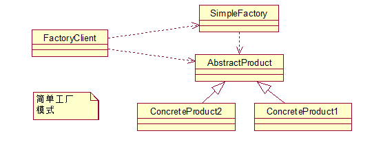
抽象工厂模式：
先来认识下什么是产品族： 位于不同产品等级结构中，功能相关联的产品组成的家族。
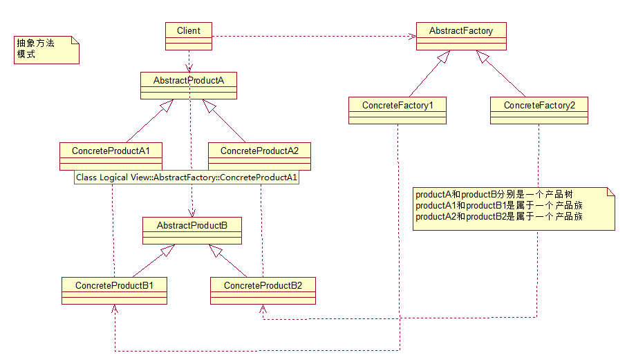
图中的BmwCar和BenzCar就是两个产品树（产品层次结构）；而如图所示的BenzSportsCar和BmwSportsCar就是一个产品族。他们都可以放到跑车家族中，因此功能有所关联。同理BmwBussinessCar和BenzBusinessCar也是一个产品族。
可以这么说，它和工厂方法模式的区别就在于需要创建对象的复杂程度上。而且抽象工厂模式是三个里面最为抽象、最具一般性的。抽象工厂模式的用意为：给客户端提供一个接口，可以创建多个产品族中的产品对象。
而且使用抽象工厂模式还要满足一下条件：
- 系统中有多个产品族，而系统一次只可能消费其中一族产品
- 同属于同一个产品族的产品以其使用。
来看看抽象工厂模式的各个角色（和工厂方法的如出一辙）：
- 抽象工厂角色： 这是工厂方法模式的核心，它与应用程序无关。是具体工厂角色必须实现的接口或者必须继承的父类。在java中它由抽象类或者接口来实现。
- 具体工厂角色：它含有和具体业务逻辑有关的代码。由应用程序调用以创建对应的具体产品的对象。在java中它由具体的类来实现。
- 抽象产品角色：它是具体产品继承的父类或者是实现的接口。在java中一般有抽象类或者接口来实现。
- 具体产品角色：具体工厂角色所创建的对象就是此角色的实例。在java中由具体的类来实现。
十、Spring / Spring MVC
90. 为什么要使用 spring？
1.简介
- 目的：解决企业应用开发的复杂性
- 功能：使用基本的JavaBean代替EJB，并提供了更多的企业应用功能
- 范围：任何Java应用
简单来说，Spring是一个轻量级的控制反转(IoC)和面向切面(AOP)的容器框架。
2.轻量
从大小与开销两方面而言Spring都是轻量的。完整的Spring框架可以在一个大小只有1MB多的JAR文件里发布。并且Spring所需的处理开销也是微不足道的。此外，Spring是非侵入式的：典型地，Spring应用中的对象不依赖于Spring的特定类。
3.控制反转
Spring通过一种称作控制反转（IoC）的技术促进了松耦合。当应用了IoC，一个对象依赖的其它对象会通过被动的方式传递进来，而不是这个对象自己创建或者查找依赖对象。你可以认为IoC与JNDI相反——不是对象从容器中查找依赖，而是容器在对象初始化时不等对象请求就主动将依赖传递给它。
4.面向切面
Spring提供了面向切面编程的丰富支持，允许通过分离应用的业务逻辑与系统级服务（例如审计（auditing）和事务（transaction）管理）进行内聚性的开发。应用对象只实现它们应该做的——完成业务逻辑——仅此而已。它们并不负责（甚至是意识）其它的系统级关注点，例如日志或事务支持。
5.容器
Spring包含并管理应用对象的配置和生命周期，在这个意义上它是一种容器，你可以配置你的每个bean如何被创建——基于一个可配置原型（prototype），你的bean可以创建一个单独的实例或者每次需要时都生成一个新的实例——以及它们是如何相互关联的。然而，Spring不应该被混同于传统的重量级的EJB容器，它们经常是庞大与笨重的，难以使用。
6.框架
Spring可以将简单的组件配置、组合成为复杂的应用。在Spring中，应用对象被声明式地组合，典型地是在一个XML文件里。Spring也提供了很多基础功能（事务管理、持久化框架集成等等），将应用逻辑的开发留给了你。
所有Spring的这些特征使你能够编写更干净、更可管理、并且更易于测试的代码。它们也为Spring中的各种模块提供了基础支持。
91. 解释一下什么是 aop？
AOP（Aspect-Oriented Programming，面向方面编程），可以说是OOP（Object-Oriented Programing，面向对象编程）的补充和完善。OOP引入封装、继承和多态性等概念来建立一种对象层次结构，用以模拟公共行为的一个集合。当我们需要为分散的对象引入公共行为的时候，OOP则显得无能为力。也就是说，OOP允许你定义从上到下的关系，但并不适合定义从左到右的关系。例如日志功能。日志代码往往水平地散布在所有对象层次中，而与它所散布到的对象的核心功能毫无关系。对于其他类型的代码，如安全性、异常处理和透明的持续性也是如此。这种散布在各处的无关的代码被称为横切（cross-cutting）代码，在OOP设计中，它导致了大量代码的重复，而不利于各个模块的重用。
而AOP技术则恰恰相反，它利用一种称为“横切”的技术，剖解开封装的对象内部，并将那些影响了多个类的公共行为封装到一个可重用模块，并将其名为“Aspect”，即方面。所谓“方面”，简单地说，就是将那些与业务无关，却为业务模块所共同调用的逻辑或责任封装起来，便于减少系统的重复代码，降低模块间的耦合度，并有利于未来的可操作性和可维护性。AOP代表的是一个横向的关系，如果说“对象”是一个空心的圆柱体，其中封装的是对象的属性和行为；那么面向方面编程的方法，就仿佛一把利刃，将这些空心圆柱体剖开，以获得其内部的消息。而剖开的切面，也就是所谓的“方面”了。然后它又以巧夺天功的妙手将这些剖开的切面复原，不留痕迹。
使用“横切”技术，AOP把软件系统分为两个部分：核心关注点和横切关注点。业务处理的主要流程是核心关注点，与之关系不大的部分是横切关注点。横切关注点的一个特点是，他们经常发生在核心关注点的多处，而各处都基本相似。比如权限认证、日志、事务处理。Aop 的作用在于分离系统中的各种关注点，将核心关注点和横切关注点分离开来。正如Avanade公司的高级方案构架师Adam Magee所说，AOP的核心思想就是“将应用程序中的商业逻辑同对其提供支持的通用服务进行分离。”
92. 解释一下什么是 ioc？
IOC是Inversion of Control的缩写，多数书籍翻译成“控制反转”。
1996年，Michael Mattson在一篇有关探讨面向对象框架的文章中，首先提出了IOC 这个概念。对于面向对象设计及编程的基本思想，前面我们已经讲了很多了，不再赘述，简单来说就是把复杂系统分解成相互合作的对象，这些对象类通过封装以后，内部实现对外部是透明的，从而降低了解决问题的复杂度，而且可以灵活地被重用和扩展。
IOC理论提出的观点大体是这样的：借助于“第三方”实现具有依赖关系的对象之间的解耦。如下图：
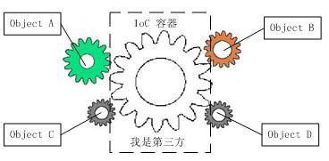
大家看到了吧，由于引进了中间位置的“第三方”，也就是IOC容器，使得A、B、C、D这4个对象没有了耦合关系，齿轮之间的传动全部依靠“第三方”了，全部对象的控制权全部上缴给“第三方”IOC容器，所以，IOC容器成了整个系统的关键核心，它起到了一种类似“粘合剂”的作用，把系统中的所有对象粘合在一起发挥作用，如果没有这个“粘合剂”，对象与对象之间会彼此失去联系，这就是有人把IOC容器比喻成“粘合剂”的由来。
我们再来做个试验：把上图中间的IOC容器拿掉，然后再来看看这套系统：
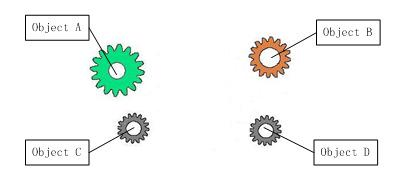
我们现在看到的画面，就是我们要实现整个系统所需要完成的全部内容。这时候，A、B、C、D这4个对象之间已经没有了耦合关系，彼此毫无联系，这样的话，当你在实现A的时候，根本无须再去考虑B、C和D了，对象之间的依赖关系已经降低到了最低程度。所以，如果真能实现IOC容器，对于系统开发而言，这将是一件多么美好的事情，参与开发的每一成员只要实现自己的类就可以了，跟别人没有任何关系！
我们再来看看，控制反转(IOC)到底为什么要起这么个名字？我们来对比一下：
软件系统在没有引入IOC容器之前，如图1所示，对象A依赖于对象B，那么对象A在初始化或者运行到某一点的时候，自己必须主动去创建对象B或者使用已经创建的对象B。无论是创建还是使用对象B，控制权都在自己手上。
软件系统在引入IOC容器之后，这种情形就完全改变了，如图3所示，由于IOC容器的加入，对象A与对象B之间失去了直接联系，所以，当对象A运行到需要对象B的时候，IOC容器会主动创建一个对象B注入到对象A需要的地方。
通过前后的对比，我们不难看出来：对象A获得依赖对象B的过程,由主动行为变为了被动行为，控制权颠倒过来了，这就是“控制反转”这个名称的由来。
93. spring 有哪些主要模块？
Spring框架至今已集成了20多个模块。这些模块主要被分如下图所示的核心容器、数据访问/集成,、Web、AOP（面向切面编程）、工具、消息和测试模块。
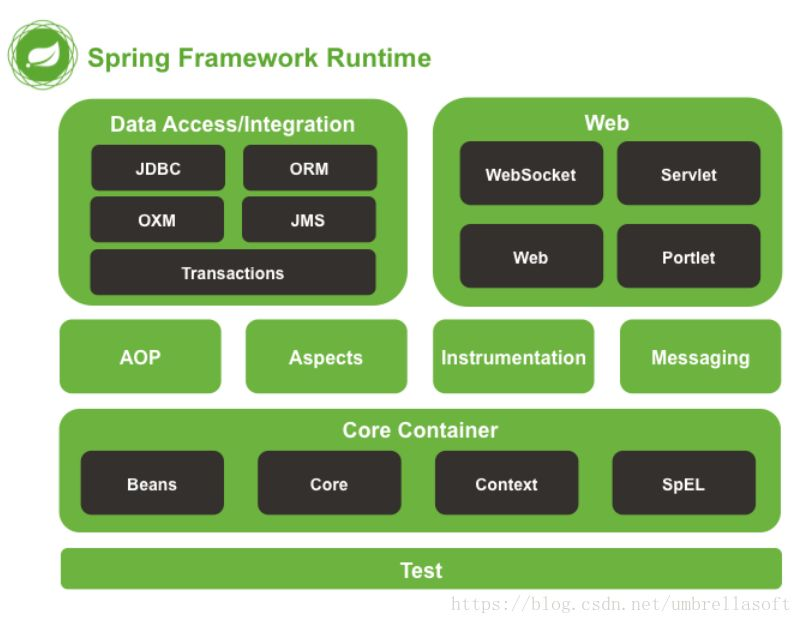
更多信息：howtodoinjava.com/java-spring-framework-tutorials/
94. spring 常用的注入方式有哪些？
Spring通过DI（依赖注入）实现IOC（控制反转），常用的注入方式主要有三种：
- 构造方法注入
- setter注入
- 基于注解的注入
95. spring 中的 bean 是线程安全的吗？
Spring容器中的Bean是否线程安全，容器本身并没有提供Bean的线程安全策略，因此可以说spring容器中的Bean本身不具备线程安全的特性，但是具体还是要结合具体scope的Bean去研究。
96. spring 支持几种 bean 的作用域？
当通过spring容器创建一个Bean实例时，不仅可以完成Bean实例的实例化，还可以为Bean指定特定的作用域。Spring支持如下5种作用域：
- singleton：单例模式，在整个Spring IoC容器中，使用singleton定义的Bean将只有一个实例
- prototype：原型模式，每次通过容器的getBean方法获取prototype定义的Bean时，都将产生一个新的Bean实例
- request：对于每次HTTP请求，使用request定义的Bean都将产生一个新实例，即每次HTTP请求将会产生不同的Bean实例。只有在Web应用中使用Spring时，该作用域才有效
- session：对于每次HTTP Session，使用session定义的Bean豆浆产生一个新实例。同样只有在Web应用中使用Spring时，该作用域才有效
- globalsession：每个全局的HTTP Session，使用session定义的Bean都将产生一个新实例。典型情况下，仅在使用portlet context的时候有效。同样只有在Web应用中使用Spring时，该作用域才有效
其中比较常用的是singleton和prototype两种作用域。对于singleton作用域的Bean，每次请求该Bean都将获得相同的实例。容器负责跟踪Bean实例的状态，负责维护Bean实例的生命周期行为；如果一个Bean被设置成prototype作用域，程序每次请求该id的Bean，Spring都会新建一个Bean实例，然后返回给程序。在这种情况下，Spring容器仅仅使用new 关键字创建Bean实例，一旦创建成功，容器不在跟踪实例，也不会维护Bean实例的状态。
如果不指定Bean的作用域，Spring默认使用singleton作用域。Java在创建Java实例时，需要进行内存申请；销毁实例时，需要完成垃圾回收，这些工作都会导致系统开销的增加。因此，prototype作用域Bean的创建、销毁代价比较大。而singleton作用域的Bean实例一旦创建成功，可以重复使用。因此，除非必要，否则尽量避免将Bean被设置成prototype作用域。
97. spring 自动装配 bean 有哪些方式？
Spring容器负责创建应用程序中的bean同时通过ID来协调这些对象之间的关系。作为开发人员，我们需要告诉Spring要创建哪些bean并且如何将其装配到一起。
spring中bean装配有两种方式：
- 隐式的bean发现机制和自动装配
- 在java代码或者XML中进行显示配置
当然这些方式也可以配合使用。
98. spring 事务实现方式有哪些？
- 编程式事务管理对基于 POJO 的应用来说是唯一选择。我们需要在代码中调用beginTransaction()、commit()、rollback()等事务管理相关的方法，这就是编程式事务管理。
- 基于 TransactionProxyFactoryBean 的声明式事务管理
- 基于 @Transactional 的声明式事务管理
- 基于 Aspectj AOP 配置事务
99. 说一下 spring 的事务隔离？
事务隔离级别指的是一个事务对数据的修改与另一个并行的事务的隔离程度，当多个事务同时访问相同数据时，如果没有采取必要的隔离机制，就可能发生以下问题：
- 脏读：一个事务读到另一个事务未提交的更新数据。
- 幻读：例如第一个事务对一个表中的数据进行了修改，比如这种修改涉及到表中的“全部数据行”。同时，第二个事务也修改这个表中的数据，这种修改是向表中插入“一行新数据”。那么，以后就会发生操作第一个事务的用户发现表中还存在没有修改的数据行，就好象发生了幻觉一样。
- 不可重复读：比方说在同一个事务中先后执行两条一模一样的select语句，期间在此次事务中没有执行过任何DDL语句，但先后得到的结果不一致，这就是不可重复读。
100. 说一下 spring mvc 运行流程？
Spring MVC运行流程图：
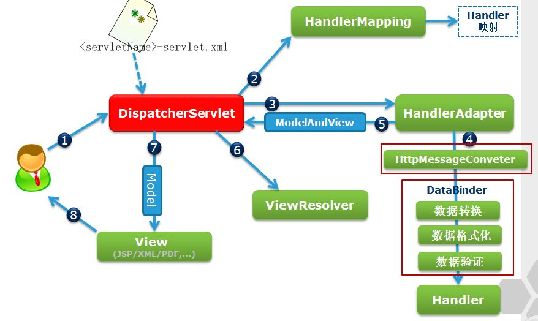
Spring运行流程描述：
1. 用户向服务器发送请求，请求被Spring 前端控制Servelt DispatcherServlet捕获；
2. DispatcherServlet对请求URL进行解析，得到请求资源标识符（URI）。然后根据该URI，调用HandlerMapping获得该Handler配置的所有相关的对象（包括Handler对象以及Handler对象对应的拦截器），最后以HandlerExecutionChain对象的形式返回；
3. DispatcherServlet 根据获得的Handler，选择一个合适的HandlerAdapter；（附注：如果成功获得HandlerAdapter后，此时将开始执行拦截器的preHandler(...)方法）
4. 提取Request中的模型数据，填充Handler入参，开始执行Handler（Controller)。 在填充Handler的入参过程中，根据你的配置，Spring将帮你做一些额外的工作：
- HttpMessageConveter： 将请求消息（如Json、xml等数据）转换成一个对象，将对象转换为指定的响应信息
- 数据转换：对请求消息进行数据转换。如String转换成Integer、Double等
- 数据根式化：对请求消息进行数据格式化。 如将字符串转换成格式化数字或格式化日期等
- 数据验证： 验证数据的有效性（长度、格式等），验证结果存储到BindingResult或Error中
5. Handler执行完成后，向DispatcherServlet 返回一个ModelAndView对象；
6. 根据返回的ModelAndView，选择一个适合的ViewResolver（必须是已经注册到Spring容器中的ViewResolver)返回给DispatcherServlet ；
7. ViewResolver 结合Model和View，来渲染视图；
8. 将渲染结果返回给客户端。
101. spring mvc 有哪些组件？
Spring MVC的核心组件：
- DispatcherServlet：中央控制器，把请求给转发到具体的控制类
- Controller：具体处理请求的控制器
- HandlerMapping：映射处理器，负责映射中央处理器转发给controller时的映射策略
- ModelAndView：服务层返回的数据和视图层的封装类
- ViewResolver：视图解析器，解析具体的视图
- Interceptors ：拦截器，负责拦截我们定义的请求然后做处理工作
102. @RequestMapping 的作用是什么？
RequestMapping是一个用来处理请求地址映射的注解，可用于类或方法上。用于类上，表示类中的所有响应请求的方法都是以该地址作为父路径。
RequestMapping注解有六个属性，下面我们把她分成三类进行说明。
value， method：
- value：指定请求的实际地址，指定的地址可以是URI Template 模式（后面将会说明）；
- method：指定请求的method类型， GET、POST、PUT、DELETE等；
consumes，produces
- consumes：指定处理请求的提交内容类型（Content-Type），例如application/json, text/html；
- produces：指定返回的内容类型，仅当request请求头中的(Accept)类型中包含该指定类型才返回；
params，headers
- params： 指定request中必须包含某些参数值是，才让该方法处理。
- headers：指定request中必须包含某些指定的header值，才能让该方法处理请求。